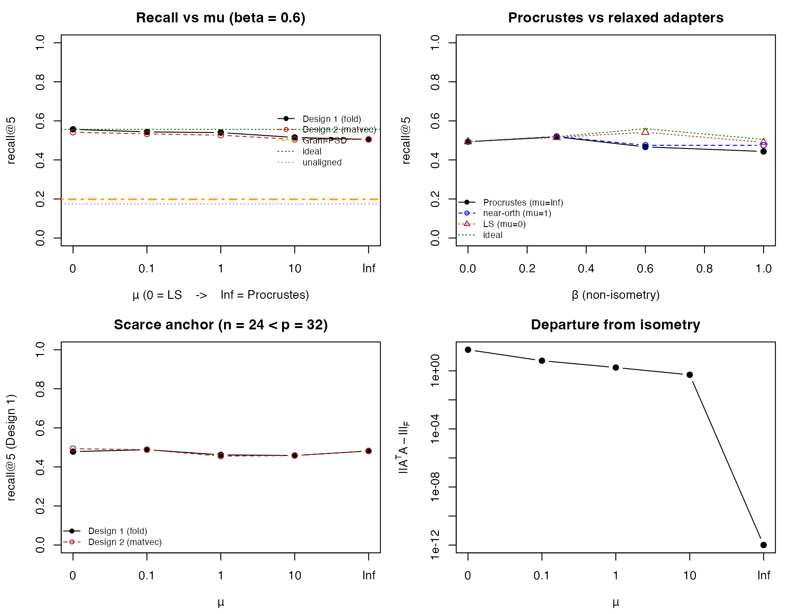

Federated Cosine Similarity with Site-Private Fine-Tuned Models
Balasubramanian Narasimhan
2026-06-26
Source:vignettes/similarity.Rmd
similarity.RmdIntroduction
A recurring problem in federated medical analytics is similarity search across silos. A clinician at one hospital sees an unusual case and wants to ask “do other hospitals in our network have similar patients?” — without sending the patient out, without the other hospitals revealing which of their patients were checked, and without any single party (including a coordinating master) seeing similarity scores in the clear.
The natural primitive is cosine similarity between embeddings. Modern foundation models map patient data (radiology reports, chest X-rays, pathology slides) into a fixed-dimensional vector space where geometric proximity tracks clinical similarity. Cosine similarity reduces to an inner product on unit-norm vectors, which is exactly what threshold CKKS computes efficiently.
The wrinkle is that hospitals do not all use the same model. Each hospital starts from a public foundation model and fine-tunes it on its own data for its own purposes — it does not constrain the result to be an isometry of the public model. The fine-tuned embeddings therefore differ from the public baseline by a generically non-isometric transformation of the geometry, and a query in the public-model space is no longer directly comparable to a database vector in a hospital’s private space.
This vignette closes the gap with a per-site compatibility
adapter
,
fit post hoc on a public anchor cohort. The adapter lives on a
one-parameter family indexed by a near-isometry penalty
:
orthogonal Procrustes at one end
(),
unconstrained least squares at the other
(),
near-orthogonal maps in between. It is deployed in either of two ways —
applied to the encrypted query (the homomorphic matrix–vector multiply,
valid as a cosine near the orthogonal end), or folded into the database
offline so the encrypted query reduces to a plain inner product.
Threshold decryption returns the top-k matches, with no
party able to decrypt intermediate ciphertexts unilaterally.
The accompanying similarity-sideexp.md document
describes a deferred experiment on a real fine-tuned model. The vignette
uses synthetic data so it renders quickly during package build.
The setup
Three sites — labeled — each hold a cohort of patients. Each cohort is embedded with the site’s privately fine-tuned model into for some fixed dimension (the architecture is shared across sites; only the weights differ).
The query enters the system from a clinician who does not have access to any site’s private model. They embed their candidate patient with the public foundation model, producing . The query is encrypted under a joint threshold key whose secret-key material is shared -of- across the three sites.
The retrieval target is the top- patients across all sites whose private-model embeddings are most cosine-similar to the query, returned as a list of tuples.
The friction is that lives in the public-model geometry while each site’s database lives in the site’s private-model geometry. We close the gap with a per-site compatibility adapter fit on a public anchor cohort. is held privately by site and never leaves; it is applied to encrypted queries to bring them into agreement with site ’s geometry before the inner-product step (or, equivalently, folded into the site’s database offline).
Threat model
Three sites and one untrusted aggregator (the master):
- Sites each hold private patient embeddings, a private compatibility adapter , and a secret-key share . They are honest-but-curious among themselves and toward the master. Each site sees the master’s encrypted query but cannot decrypt it; each site sees its own database in the clear (it is its own data); each site never sees other sites’ databases or scores.
- Master holds no secret-key material. It receives the encrypted query from the querier, broadcasts it to the sites, collects their encrypted scores, orchestrates the n-of-n partial-decryption ceremony for the top- results, and returns them to the querier. A curious or compromised master cannot decrypt anything by itself.
- Querier sees only the top- result tuples. Repeated adaptive queries leak structural information about the database in the same Hyrum-style sense as any retrieval system; this leakage is acknowledged but not eliminated.
What the master sees, by stage:
- The encrypted query . Not decryptable alone.
- Per-site encrypted score ciphertexts. Not decryptable alone.
- Partial decryptions of the top- scores from each site. Not decryptable individually.
- After fusion, the plaintext top- scores. Released to the querier as the protocol output.
Step 4 is the only plaintext the master ever holds, and only for the top- scores released to the querier — not for any intermediate quantity.
The site-private compatibility adapters never leave their sites. They are applied to ciphertexts as plaintext-matrix × ciphertext-vector multiplications inside the homomorphic evaluation (or folded into the site’s database offline), so the adapter never appears in the clear at any party other than its owner.
The protocol
The protocol has three phases. The setup phase runs once, offline; the query phase and result phase run for each query.
Setup phase.
- The three sites jointly generate a CKKS threshold key pair (-of-). Joint rotation keys for slot rotations are also generated by an -of- ceremony.
- A public anchor cohort of patients with public-model embeddings is published.
- Each site embeds the anchor cohort with its private fine-tuned model and fits its compatibility adapter along the family (orthogonal Procrustes at , least squares at ).
- Each site stores its local cohort, embedded with the private model and normalized to unit length — and, for the fold (Design 1) deployment, the public-compatible images of those vectors.
Query phase. The querier embeds their candidate patient with the public model, normalizes to unit length, encrypts into a slot-batched ciphertext under the joint public key, and broadcasts the ciphertext to the master.
For each site :
- The site receives the encrypted query .
- The site applies its private to the ciphertext via diagonal-encoded matrix–vector multiplication, producing (Design 2). Near the orthogonal end of the family the result is unit-norm, so the score is a genuine cosine; alternatively the site skips this step and scores the query directly against its folded public-compatible database (Design 1).
- The site computes inner products against each of its local embeddings via slot-wise multiplication followed by log- rotation-and-add slot summation, producing one encrypted scalar per local patient.
- The site returns its score ciphertexts to the master, alongside plaintext local patient indices.
Result phase.
- The master concatenates encrypted scores across all sites. In v1, plaintext local indices are kept alongside encrypted scores; encrypted top- selection in CKKS is feasible but adds depth and complexity orthogonal to this vignette’s pedagogical aim.
- The master collects partial decryption shares from all three sites for the encrypted score ciphertexts. Fusion yields plaintext scores; the master sorts plaintext-side and returns the top- to the querier.
Synthetic data
The vignette uses fully synthetic data so it renders quickly during package build. The phenotype-mixture model below is the simplest setup that gives a meaningful retrieval ground truth.
suppressPackageStartupMessages({
library(homomorpheR)
library(openfhe.R)
})
set.seed(20260428)
p <- 32L
n_sites <- 3L
cohort_sizes <- c(80L, 60L, 100L)
n_anchor <- 100L
n_phenotypes <- 5L
top_k <- 5LA patient is one of n_phenotypes clinical phenotypes.
Each phenotype is a Gaussian cluster in
.
Phenotype labels are the retrieval ground truth: a query of phenotype
should be matched to database patients of phenotype
.
phenotype_centers <- matrix(rnorm(n_phenotypes * p, sd = 1),
n_phenotypes, p)
embed_public <- function(n) {
labels <- sample.int(n_phenotypes, n, replace = TRUE)
centers <- phenotype_centers[labels, , drop = FALSE]
noise <- matrix(rnorm(n * p, sd = 0.4), n, p)
z <- centers + noise
z <- z / sqrt(rowSums(z^2)) # unit norm
list(z = z, label = labels)
}A site fine-tunes for its own purposes; it does not constrain the result to be an isometry of the public model. We therefore model the per-site drift as a non-isometric linear map — a random rotation composed with a diagonal stretch , standard normal. The parameter is the non-isometry magnitude: recovers an exactly orthogonal drift (the special case where the geometry is merely rotated), and stretches the embedding directions anisotropically, as a freely fine-tuned model generically would. The site’s embeddings are unit-normalized after the map, so the drift acts on the sphere.
random_drift <- function(p, beta) {
## Free fine-tuning, simulated as B = Q D: a random rotation Q
## composed with an anisotropic stretch D = diag(exp(beta g)).
## beta = 0 gives an exactly orthogonal (isometric) drift;
## beta > 0 is non-isometric, the generic fine-tuned case.
Q <- qr.Q(qr(matrix(rnorm(p * p), p, p)))
if (beta == 0) return(Q)
Q %*% diag(exp(beta * rnorm(p)))
}
embed_private <- function(z_public, B_k) {
## Site k's fine-tuned model in column-vector convention:
## f_k(x) = B_k · f(x). For a matrix z_public of n row-stacked
## vectors, the private embeddings are z_public %*% t(B_k),
## then unit-normalized (the drift acts on the sphere; under a
## non-isometric B the normalization is a genuine nonlinearity).
v <- z_public %*% t(B_k)
v / sqrt(rowSums(v^2))
}The public anchor cohort is a small, publicly-available set of patient examples. Each site embeds the anchors twice — once with the public model (giving , identical at every site by construction) and once with its own private fine-tuned model (giving ). The pair drives a post-hoc compatibility adapter that maps the site’s private geometry back to the public protocol, fit by
The penalty parameter traces a one-parameter family. At the adapter is forced orthogonal and the fit is the classical orthogonal Procrustes problem, solved in closed form by the singular value decomposition — this is the rigid endpoint, exact only when the drift is itself isometric. At the adapter is an unconstrained least-squares map, the best public-space fit but generically non-isometric. Intermediate interpolates: a near-orthogonal map. We deploy by applying it to the encrypted query, , which recovers the public-space cosine when the adapter inverts the drift (exactly, in the orthogonal limit).
fit_adapter <- function(Z_priv, Z_pub, mu) {
## Compatibility adapter A (private -> public): Z_priv A ~ Z_pub,
## with a near-isometry penalty mu * ||A^T A - I||^2.
p <- ncol(Z_priv)
if (is.infinite(mu)) { # orthogonal Procrustes
sv <- svd(crossprod(Z_priv, Z_pub))
return(sv$u %*% t(sv$v))
}
A_ls <- solve(crossprod(Z_priv) + 1e-6 * diag(p), crossprod(Z_priv, Z_pub))
if (mu == 0) return(A_ls) # least squares
fn <- function(par) { A <- matrix(par, p, p) # near-orthogonal
sum((Z_priv %*% A - Z_pub)^2) + mu * sum((crossprod(A) - diag(p))^2) }
gr <- function(par) { A <- matrix(par, p, p)
as.vector(2 * crossprod(Z_priv, Z_priv %*% A - Z_pub) +
4 * mu * (A %*% (crossprod(A) - diag(p)))) }
matrix(optim(as.vector(A_ls), fn, gr, method = "L-BFGS-B",
control = list(maxit = 400))$par, p, p)
}A convex alternative one might reach for is Gram / metric learning (§10.4 of the companion exploration): fit a positive-semidefinite matching the public Gram matrix, . Its minimizer is analytic — — and we deploy its symmetric square root. We include it only to show, below, that it is the wrong tool here.
fit_gram <- function(Z_priv, Z_pub) {
M <- tcrossprod(solve(crossprod(Z_priv) + 1e-6 * diag(ncol(Z_priv)),
crossprod(Z_priv, Z_pub)))
e <- eigen(M, symmetric = TRUE)
e$vectors %*% (sqrt(pmax(e$values, 0)) * t(e$vectors)) # symmetric M^{1/2}
}
unit_rows <- function(Z) Z / sqrt(rowSums(Z^2)) # for Design-1 foldingA moderate non-isometry magnitude drives the protocol walk-through; the sweeps later vary it:
beta_demo <- 0.6
mu_demo <- Inf # orthogonal endpoint for the encrypted walk-throughThe site cohorts and anchor cohort are sampled from the same phenotype-mixture model (in real deployments the anchor cohort is publicly distributed and its phenotype distribution is set once; we approximate by independent sampling).
public_anchor <- embed_public(n_anchor)
public_query <- embed_public(1L) # one query for the protocol walk-through
site_cohorts <- lapply(cohort_sizes, embed_public)We later fit one adapter per site, build both the raw-private and folded public-compatible databases, and report retrieval recall as the non-isometry and the penalty vary.
Threshold key generation
The three sites jointly construct a CKKS keypair so that the secret
key is split
-of-
across them. The familiar make_threshold_master() from
homomorpheR wires the joint public key and the per-site
secret-key shares for us; the master is given the joint public key but
never holds usable secret material.
cc <- fhe_context(
scheme = "CKKS",
multiplicative_depth = 3L,
scaling_mod_size = 45L,
batch_size = p,
features = c(Feature$MULTIPARTY, Feature$KEYSWITCH))
master <- make_threshold_master(name = "master",
crypto_context = cc,
n_sites = n_sites)The joint public key is master@joint_pubkey; the
secret-key shares are master@secret_keys[[k]] for
.
The master_encrypt(master, x) and
master_decrypt(master, ct, len) generics dispatch on
ThresholdMaster and run the
-of-
partial-decryption ceremony internally — no party ever holds a usable
secret unilaterally.
Joint rotation keys
The matrix–vector multiply step in the protocol is implemented as a diagonal-encoded matvec. For a matrix and a slot-batched ciphertext encoding a vector :
where is the -th diagonal of (a -vector of plaintexts), is slot-wise multiplication, and cyclically rotates the slots of by . Each rotation requires a precomputed rotation key. In single-key CKKS these are generated from the secret key; in threshold CKKS they are generated by an -of- ceremony that mirrors the encryption-key ceremony.
The inner-product step adds a second use of rotation keys: the log- rotation-and-add reduction that sums the slots of an encoded -vector into slot 0. The same set of rotation indices serves both purposes; we generate keys for indices and rely on the subset that each step needs.
rotation_indices <- seq_len(p - 1L)
sks <- master@secret_keys
pks <- list(master@joint_pubkey) # daisy-chain pubkey at step 1
joint_pk_tag <- get_key_tag(master@joint_pubkey)
## Lead-party rotation-key generation. Populates the crypto
## context's automorphism-key registry under the lead party's
## secret-key tag.
eval_rotate_key_gen(cc, sks[[1]], rotation_indices)
lead_tag <- get_key_tag(sks[[1]])
rot_running <- get_eval_automorphism_key_map(lead_tag)
## Sites 2..n contribute their rotation-key shares in turn.
## At each step, the running joint share is registered under
## the cumulative-pubkey tag — which for our `make_threshold_master`
## is the same `joint_pk_tag` at every step (the master daisy-chains
## pubkeys forward but only retains the final joint pubkey).
for (k in 2:n_sites) {
share_k <- multi_eval_at_index_key_gen(
cc, sks[[k]], rot_running,
index_list = rotation_indices,
key_tag = joint_pk_tag)
rot_running <- multi_add_eval_automorphism_keys(
cc, rot_running, share_k, key_tag = joint_pk_tag)
}
insert_eval_automorphism_key(rot_running, key_tag = joint_pk_tag)After insertion, any ciphertext encrypted under the joint public key
(i.e., under master@joint_pubkey) can be rotated by any
index in rotation_indices via
eval_rotate(ct, idx).
A round-trip smoke test confirms the joint rotation key works. We encrypt a known vector, rotate by 3 slots, decrypt via the -of- ceremony, and check that slot now holds :
x <- 1:p
ct_x <- master_encrypt(master, x)
ct_rot <- eval_rotate(ct_x, 3L)
recovered <- master_decrypt(master, ct_rot, len = p)
expected <- x[((seq_len(p) - 1L + 3L) %% p) + 1L]
stopifnot(max(abs(recovered - expected)) < 1e-6)
cat("rotation round-trip max error:",
sprintf("%.2e\n", max(abs(recovered - expected))))## rotation round-trip max error: 9.32e-12Per-site adapter fit and database setup
For the encrypted walk-through we fit the adapter at the orthogonal endpoint (), so the map applied to the query is exactly norm-preserving and the matrix–vector multiply below produces a unit-norm result — the regime in which the raw-private-database matvec (Design 2) is a valid cosine. The recall sweeps later vary and the drift. Each site’s fine-tuned model is the non-isometric ; the adapter is fit post hoc on the public anchor cohort.
B <- lapply(seq_len(n_sites), function(k) random_drift(p, beta_demo))
## Each site's private database, embedded under that site's
## fine-tuned model and unit-normalized on the sphere.
db <- lapply(seq_len(n_sites), function(k) {
cohort <- site_cohorts[[k]]
list(z = embed_private(cohort$z, B[[k]]),
label = cohort$label)
})
## Each site fits its compatibility adapter on the anchor cohort.
A_hat <- lapply(seq_len(n_sites), function(k) {
Z_pub <- public_anchor$z
Z_priv <- embed_private(Z_pub, B[[k]])
fit_adapter(Z_priv, Z_pub, mu_demo)
})
## Design-1 deployment: the adapter folded into the database
## offline, giving unit-norm public-compatible vectors that an
## encrypted public-model query scores directly. (At mu = Inf the
## adapter is orthogonal, so folding is norm-preserving and
## Design 1 and Design 2 coincide; they part company at finite mu.)
db_fold <- lapply(seq_len(n_sites), function(k)
list(z = unit_rows(db[[k]]$z %*% A_hat[[k]]), label = db[[k]]$label))
## Setup diagnostics the master would receive: anchor-reconstruction
## error and the adapter's departure from isometry.
cat("Per-site adapter diagnostics (beta =", beta_demo, ", mu = Inf):\n")## Per-site adapter diagnostics (beta = 0.6 , mu = Inf):
for (k in seq_len(n_sites)) {
Zr <- embed_private(public_anchor$z, B[[k]])
recon <- norm(Zr %*% A_hat[[k]] - public_anchor$z, "F")
aniso <- norm(crossprod(A_hat[[k]]) - diag(p), "F")
cat(sprintf(" site %d: anchor recon %.2e, ||A^T A - I||_F %.2e\n",
k, recon, aniso))
}## site 1: anchor recon 2.28e+00, ||A^T A - I||_F 8.63e-15
## site 2: anchor recon 1.72e+00, ||A^T A - I||_F 1.01e-14
## site 3: anchor recon 3.01e+00, ||A^T A - I||_F 9.78e-15Diagonal-encoded matrix-vector multiply
The CKKS-friendly way to multiply a plaintext matrix into a slot-batched encrypted vector is the diagonal encoding. The matrix is decomposed into its generalized diagonals, each a length- plaintext vector:
The matrix–vector product becomes
where is slot-wise multiplication and is the -step cyclic slot rotation. Each term is a single ciphertext × plaintext multiply followed by an encrypted- vector add. The total cost is rotations and plaintext-multiplies per matrix-vector product; the multiplicative depth is one.
build_diagonals <- function(M, p) {
## d_i[j] = M[j, ((j-1 + i) %% p) + 1] (1-based R indexing)
lapply(0:(p - 1L), function(i) {
vapply(seq_len(p),
function(j) M[j, ((j - 1L + i) %% p) + 1L],
numeric(1L))
})
}
encrypted_matvec <- function(ct_q, M, cc, p) {
diags <- build_diagonals(M, p)
ct_acc <- NULL
for (i in 0:(p - 1L)) {
d_pt <- make_ckks_packed_plaintext(cc, diags[[i + 1L]])
ct_term <- if (i == 0L) {
eval_mult(ct_q, d_pt)
} else {
eval_mult(eval_rotate(ct_q, i), d_pt)
}
ct_acc <- if (is.null(ct_acc)) ct_term else eval_add(ct_acc, ct_term)
}
ct_acc
}A round-trip smoke test on a known query vector confirms the matvec recovers to floating-point precision:
q_demo <- public_query$z[1, ]
ct_q <- master_encrypt(master, q_demo)
ct_Aq <- encrypted_matvec(ct_q, A_hat[[1]], cc, p)
Aq_recovered <- master_decrypt(master, ct_Aq, len = p)
Aq_expected <- as.numeric(A_hat[[1]] %*% q_demo)
cat(sprintf("matvec max error (site 1): %.2e\n",
max(abs(Aq_recovered - Aq_expected))))## matvec max error (site 1): 2.14e-11Inner product against the local database
After the matvec, the encrypted query has been mapped by the adapter into site ’s private geometry (unit-norm at the orthogonal endpoint used here). The cosine similarity against a private-database vector (also unit-norm and held in plaintext at the site) is just
In CKKS this is a slot-wise multiply of the matvec output by the plaintext-encoded , followed by a log- rotate-and-add slot-summation reduction that places the summed inner product in slot 0 (and uninteresting partial sums in the other slots).
slot_sum_reduction <- function(ct, p) {
## Standard CKKS log-p reduction. After the loop, slot 0 of
## the result holds sum_{j=1}^{p} ct[j]; other slots hold
## partial sums and are not used.
step <- p %/% 2L
while (step >= 1L) {
ct <- eval_add(ct, eval_rotate(ct, step))
step <- step %/% 2L
}
ct
}
encrypted_inner_product <- function(ct_x, v_plain, cc, p) {
pt_v <- make_ckks_packed_plaintext(cc, v_plain)
ct_prod <- eval_mult(ct_x, pt_v)
slot_sum_reduction(ct_prod, p)
}A smoke test against a single database vector confirms the inner product matches its plaintext counterpart at slot 0:
v_test <- db[[1]]$z[1, ]
ct_score <- encrypted_inner_product(ct_Aq, v_test, cc, p)
score_recovered <- master_decrypt(master, ct_score, len = 1L)
score_expected <- sum(Aq_expected * v_test)
cat(sprintf("inner-product error (site 1, patient 1): %.2e\n",
abs(score_recovered - score_expected)))## inner-product error (site 1, patient 1): 1.70e-11The same encrypted_inner_product serves the
Design 1 deployment without any matvec: the encrypted
public-model query is scored directly against the folded,
public-compatible database vectors. At the orthogonal endpoint this
matches the matvec route exactly; for a non-isometric adapter it is the
route that stays a valid cosine.
ct_score_fold <- encrypted_inner_product(ct_q, db_fold[[1]]$z[1, ], cc, p)
fold_recovered <- master_decrypt(master, ct_score_fold, len = 1L)
fold_expected <- sum(q_demo * db_fold[[1]]$z[1, ])
cat(sprintf("Design-1 inner-product error (site 1, patient 1): %.2e\n",
abs(fold_recovered - fold_expected)))## Design-1 inner-product error (site 1, patient 1): 2.49e-12Site local_fn: full per-site protocol step
The site-side computation closes over the site’s adapter and database , takes the encrypted query ciphertext as input, and returns a list of encrypted scores plus plaintext local indices. This is the Design 2 branch: the adapter is applied to the encrypted query (the matvec), and scoring runs against the site’s raw private database.
make_similarity_site_fn <- function(A_k, db_k, cc, p) {
function(ct_q) {
ct_Aq <- encrypted_matvec(ct_q, A_k, cc, p)
n_local <- nrow(db_k$z)
ct_scores <- lapply(seq_len(n_local), function(i) {
encrypted_inner_product(ct_Aq, db_k$z[i, ], cc, p)
})
list(scores = ct_scores,
local_index = seq_len(n_local),
label = db_k$label)
}
}
site_fns <- lapply(seq_len(n_sites), function(k) {
make_similarity_site_fn(A_hat[[k]], db[[k]], cc, p)
})A timed end-to-end run on the demo query through site 1 returns one encrypted score per local patient:
t0 <- proc.time()
site1_out <- site_fns[[1]](ct_q)
elapsed <- (proc.time() - t0)[["elapsed"]]
cat(sprintf("site 1 produced %d encrypted scores in %.2f s\n",
length(site1_out$scores), elapsed))## site 1 produced 80 encrypted scores in 0.85 sMaster orchestration and threshold-decrypted top-k
The master broadcasts the encrypted query to every site, collects
per-site encrypted score ciphertexts plus plaintext local patient
indices, and runs the
-of-
threshold decryption ceremony for each score so it can sort them
plaintext-side and return the top-k.
The decryption pattern is per-patient: each encrypted score
ciphertext goes through one threshold-decrypt round
(master_decrypt() calls
multiparty_decrypt_lead on site 1,
multiparty_decrypt_main on each remaining site, and
multiparty_decrypt_fusion to combine). For our 240 total
patients this runs in a few seconds; production deployments would pack
many patients per ciphertext via slot tiling and amortize the
ceremony.
run_similarity_query <- function(ct_q, site_fns, master, top_k) {
## Fan out to every site.
site_results <- lapply(seq_along(site_fns), function(k) {
out <- site_fns[[k]](ct_q)
out$site_id <- k
out
})
## Threshold-decrypt each per-patient inner-product
## ciphertext. v1 runs one ceremony per patient; a packed
## variant that fuses multiple inner products into a single
## ciphertext (via slot tiling) is a natural extension.
rows <- list()
for (s in site_results) {
for (i in seq_along(s$scores)) {
score <- master_decrypt(master, s$scores[[i]], len = 1L)
rows[[length(rows) + 1L]] <- data.frame(
site_id = s$site_id,
local_index = s$local_index[i],
label = s$label[i],
score = score)
}
}
scored <- do.call(rbind, rows)
scored <- scored[order(-scored$score), ]
head(scored, top_k)
}
t0 <- proc.time()
top_result <- run_similarity_query(ct_q, site_fns, master, top_k = top_k)
elapsed <- (proc.time() - t0)[["elapsed"]]
cat(sprintf("Top-%d retrieval over %d sites and %d patients in %.1f s\n",
top_k, n_sites, sum(cohort_sizes), elapsed))## Top-5 retrieval over 3 sites and 240 patients in 5.8 s## Query phenotype label: 4
print(top_result, row.names = FALSE)## site_id local_index label score
## 2 37 4 0.9048070
## 2 5 4 0.9009923
## 2 11 4 0.8879220
## 1 17 4 0.8808330
## 2 55 4 0.8754569Reference-truth comparison
The protocol output is meaningful only if the encrypted-domain inner products agree with their plaintext-domain counterparts to within CKKS noise. The reference computation runs the same adapter application and inner-product reduction in plaintext on each site’s database:
plaintext_top_k <- function(q, site_data, A_list, top_k) {
rows <- list()
for (k in seq_along(site_data)) {
Aq <- as.numeric(A_list[[k]] %*% q)
s_k <- site_data[[k]]
scores <- as.numeric(s_k$z %*% Aq)
for (i in seq_along(scores)) {
rows[[length(rows) + 1L]] <- data.frame(
site_id = k,
local_index = i,
label = s_k$label[i],
score = scores[i])
}
}
scored <- do.call(rbind, rows)
scored <- scored[order(-scored$score), ]
head(scored, top_k)
}
plain_top <- plaintext_top_k(q_demo, db, A_hat, top_k)
## Compare encrypted-domain top-k against the plaintext reference
## by joining on (site_id, local_index).
compare <- merge(top_result, plain_top,
by = c("site_id", "local_index"),
suffixes = c("_enc", "_plain"))
score_err <- max(abs(compare$score_enc - compare$score_plain))
cat(sprintf("Top-%d encrypted vs plaintext score max error: %.2e\n",
top_k, score_err))## Top-5 encrypted vs plaintext score max error: 1.16e-11
## Whether the encrypted-domain top-k contains the same
## (site_id, local_index) pairs as the plaintext reference.
enc_set <- paste(top_result$site_id, top_result$local_index, sep = ":")
plain_set <- paste(plain_top$site_id, plain_top$local_index, sep = ":")
cat(sprintf("Top-%d set match: %d of %d\n",
top_k, length(intersect(enc_set, plain_set)), top_k))## Top-5 set match: 5 of 5What the adapter buys: fidelity, posture, and a sweet spot
The encrypted mechanics work to floating-point precision, as the smoke tests and reference comparison above confirm (max error ). The substantive questions are statistical, and because the encrypted and plaintext scores agree to within CKKS noise we answer them in plaintext — fast enough to average over many queries and trace stable curves. Three questions:
- Fidelity. When the drift is genuinely non-isometric, does a near-orthogonal or least-squares adapter recover retrieval that the rigid orthogonal Procrustes endpoint () cannot?
- Posture. Where do the two deployments agree — Design 1 (fold the adapter into the database offline) and Design 2 (apply it to the encrypted query, the matvec) — and where must we prefer one? They coincide only when the adapter is orthogonal, so the per-vector norms it produces are all one.
- Sweet spot. Does an intermediate ever beat both endpoints, and when?
The sweeps use a less-forgiving cluster configuration than the walk-through (unit-norm phenotype centers, so noise competes with separation), letting alignment quality rather than trivial separability drive recall.
centers_u <- phenotype_centers / sqrt(rowSums(phenotype_centers^2))
embed_cfg <- function(n, sep = 0.85, sd = 0.40) {
labels <- sample.int(n_phenotypes, n, replace = TRUE)
z <- sep * centers_u[labels, , drop = FALSE] +
matrix(rnorm(n * p, sd = sd), n, p)
list(z = unit_rows(z), label = labels)
}
recall_at_k <- function(query_label, top_rows, k = top_k)
sum(top_rows$label == query_label) / k
## Federated recall of a query population under one deployment.
## design 1: fold A into the db (unit) and score <q, z>;
## design 2: apply A to the query and score <Aq, h> against raw db.
fed_recall <- function(q_pop, db_list, A_list, design) {
mean(vapply(seq_len(nrow(q_pop$z)), function(qi) {
q <- q_pop$z[qi, ]
parts <- lapply(seq_along(db_list), function(k) {
s <- db_list[[k]]
sc <- if (design == 1L) as.numeric(unit_rows(s$z %*% A_list[[k]]) %*% q)
else as.numeric(s$z %*% as.numeric(A_list[[k]] %*% q))
data.frame(label = s$label, score = sc)
})
scored <- do.call(rbind, parts)
recall_at_k(q_pop$label[qi],
head(scored[order(-scored$score), ], top_k))
}, numeric(1)))
}
## A world at non-isometry beta with an anchor cohort of size na.
make_world <- function(beta, na) {
anchor <- embed_cfg(na)
cohorts <- lapply(cohort_sizes, embed_cfg)
Bs <- lapply(seq_len(n_sites), function(k) random_drift(p, beta))
list(anchor = anchor,
pub_db = cohorts, # public embeddings (ideal ref)
priv_db = lapply(seq_len(n_sites), function(k)
list(z = embed_private(cohorts[[k]]$z, Bs[[k]]),
label = cohorts[[k]]$label)),
Hanchor = lapply(seq_len(n_sites), function(k)
embed_private(anchor$z, Bs[[k]])))
}
I_list <- replicate(n_sites, diag(p), simplify = FALSE)
n_rep <- 3L
n_q <- 40L
mu_grid <- c(0, 0.1, 1, 10, Inf)
## --- mu sweep at fixed beta, ample anchor: fidelity + posture + Gram ---
mu_sweep <- function(beta, na) {
tab <- 0; ideal <- 0; unaligned <- 0; gram <- 0
for (r in seq_len(n_rep)) {
w <- make_world(beta, na)
qp <- embed_cfg(n_q)
ideal <- ideal + fed_recall(qp, w$pub_db, I_list, 2L)
unaligned <- unaligned + fed_recall(qp, w$priv_db, I_list, 2L)
Ag <- lapply(seq_len(n_sites), function(k) fit_gram(w$Hanchor[[k]], w$anchor$z))
gram <- gram + fed_recall(qp, w$priv_db, Ag, 1L)
rows <- lapply(mu_grid, function(mu) {
A <- lapply(seq_len(n_sites), function(k)
fit_adapter(w$Hanchor[[k]], w$anchor$z, mu))
data.frame(mu = mu,
d1 = fed_recall(qp, w$priv_db, A, 1L),
d2 = fed_recall(qp, w$priv_db, A, 2L),
aniso = mean(vapply(A, function(Ak)
norm(crossprod(Ak) - diag(p), "F"), numeric(1))))
})
tab <- tab + do.call(rbind, rows)
}
tab <- tab / n_rep
tab$mu <- mu_grid
list(tab = tab, ideal = ideal / n_rep,
unaligned = unaligned / n_rep, gram = gram / n_rep)
}
mu_main <- mu_sweep(beta = 0.6, na = 100L) # ample calibration
mu_scarce <- mu_sweep(beta = 0.6, na = 24L) # anchor < p = 32
## --- beta sweep, ample anchor: Procrustes vs near-orthogonal vs LS ---
beta_grid <- c(0, 0.3, 0.6, 1.0)
beta_tab <- do.call(rbind, lapply(beta_grid, function(b) {
r3 <- replicate(n_rep, {
w <- make_world(b, 100L); qp <- embed_cfg(n_q)
fits <- lapply(c(0, 1, Inf), function(mu) {
A <- lapply(seq_len(n_sites), function(k)
fit_adapter(w$Hanchor[[k]], w$anchor$z, mu))
fed_recall(qp, w$priv_db, A, if (is.infinite(mu)) 2L else 1L)
})
c(LS = fits[[1]], near = fits[[2]], Proc = fits[[3]],
ideal = fed_recall(qp, w$pub_db, I_list, 2L))
})
data.frame(beta = b, t(rowMeans(r3)))
}))
cat("mu sweep (beta=0.6, anchor=100): ideal=",
sprintf("%.3f", mu_main$ideal), " unaligned=",
sprintf("%.3f", mu_main$unaligned), " Gram=",
sprintf("%.3f\n", mu_main$gram), sep = "")## mu sweep (beta=0.6, anchor=100): ideal=0.557 unaligned=0.175 Gram=0.198## mu d1 d2 aniso
## 0.0 0.557 0.542 28.150
## 0.1 0.543 0.533 4.962
## 1.0 0.540 0.527 1.680
## 10.0 0.515 0.505 0.532
## Inf 0.505 0.505 0.000##
## beta sweep (anchor=100):## beta LS near Proc ideal
## 0.0 0.493 0.493 0.493 0.493
## 0.3 0.515 0.520 0.518 0.518
## 0.6 0.542 0.475 0.467 0.560
## 1.0 0.490 0.475 0.443 0.505
cat("\nmu sweep at scarce anchor=24:\n")##
## mu sweep at scarce anchor=24:## mu d1 d2
## 0.0 0.478 0.493
## 0.1 0.488 0.488
## 1.0 0.462 0.455
## 10.0 0.458 0.458
## Inf 0.482 0.482Three readings come out of the sweeps. Fidelity (β panel): at the drift is isometric and Procrustes, the near-orthogonal map, and least squares all match the no-drift ideal; as the drift bends, Procrustes falls away while the relaxed adapters track the ideal — the richer map earns its keep exactly when fine-tuning is non-isometric. Posture (μ panel): Design 1 and Design 2 coincide at (where the adapter is orthogonal and the per-vector norms are all one) and separate as shrinks, so the raw-database matvec is a valid cosine only near the orthogonal endpoint; the departure-from- isometry panel quantifies the budget. Sweet spot (scarce- anchor panel): when the calibration cohort is smaller than the embedding dimension, an intermediate regularizes the adapter and can beat both endpoints — a secondary effect that appears only under scarce calibration. The Gram-PSD reference sits near the unaligned floor: its rotation invariance loses the public-frame orientation, so it is the wrong tool for a public-query retrieval (see the discussion).
op <- par(mfrow = c(2, 2), mar = c(4.2, 4.2, 2.4, 1.0))
xi <- seq_along(mu_grid)
mulab <- function(m) ifelse(is.infinite(m), "Inf", formatC(m, format = "g"))
## (1) recall vs mu: Design 1 vs Design 2, with Gram / ideal / floor
plot(xi, mu_main$tab$d1, type = "b", pch = 19, ylim = c(0, 1), xaxt = "n",
xlab = expression(mu ~ "(0 = LS -> Inf = Procrustes)"),
ylab = sprintf("recall@%d", top_k), main = "Recall vs mu (beta = 0.6)")
axis(1, xi, mulab(mu_grid))
lines(xi, mu_main$tab$d2, type = "b", pch = 1, lty = 2, col = "firebrick")
abline(h = mu_main$ideal, lty = 3, col = "darkgreen")
abline(h = mu_main$unaligned, lty = 3, col = "grey60")
abline(h = mu_main$gram, lty = 4, lwd = 2, col = "orange")
legend("right", bty = "n", cex = 0.75,
legend = c("Design 1 (fold)", "Design 2 (matvec)", "Gram-PSD",
"ideal", "unaligned"),
col = c("black", "firebrick", "orange", "darkgreen", "grey60"),
lty = c(1, 2, 4, 3, 3), pch = c(19, 1, NA, NA, NA))
## (2) recall vs beta: Procrustes vs near-orthogonal vs LS
plot(beta_tab$beta, beta_tab$Proc, type = "b", pch = 19, ylim = c(0, 1),
xlab = expression(beta ~ "(non-isometry)"), ylab = sprintf("recall@%d", top_k),
main = "Procrustes vs relaxed adapters")
lines(beta_tab$beta, beta_tab$near, type = "b", pch = 1, lty = 2, col = "blue")
lines(beta_tab$beta, beta_tab$LS, type = "b", pch = 2, lty = 3, col = "firebrick")
lines(beta_tab$beta, beta_tab$ideal, lty = 3, col = "darkgreen")
legend("bottomleft", bty = "n", cex = 0.75,
legend = c("Procrustes (mu=Inf)", "near-orth (mu=1)", "LS (mu=0)", "ideal"),
col = c("black", "blue", "firebrick", "darkgreen"),
lty = c(1, 2, 3, 3), pch = c(19, 1, 2, NA))
## (3) recall vs mu at scarce anchor (< p): the regularization sweet spot
plot(xi, mu_scarce$tab$d1, type = "b", pch = 19, ylim = c(0, 1), xaxt = "n",
xlab = expression(mu), ylab = sprintf("recall@%d (Design 1)", top_k),
main = "Scarce anchor (n = 24 < p = 32)")
axis(1, xi, mulab(mu_grid))
lines(xi, mu_scarce$tab$d2, type = "b", pch = 1, lty = 2, col = "firebrick")
legend("bottomleft", bty = "n", cex = 0.75,
legend = c("Design 1 (fold)", "Design 2 (matvec)"),
col = c("black", "firebrick"), lty = c(1, 2), pch = c(19, 1))
## (4) departure from isometry vs mu (the Design-2 / matvec budget)
plot(xi, mu_main$tab$aniso + 1e-12, type = "b", pch = 19, log = "y", xaxt = "n",
xlab = expression(mu), ylab = expression("||" * A^T * A - I * "||"[F]),
main = "Departure from isometry")
axis(1, xi, mulab(mu_grid))
par(op)Discussion
- Federated retrieval across heterogeneous fine-tuned models. Each of sites holds its own privately fine-tuned variant of a public foundation model; the protocol returns the top- patients across all sites whose private-model embeddings are most cosine-similar to a public-model query.
- Site-private compatibility adapter on the axis. Each site fits an adapter on a public anchor cohort along the family — orthogonal Procrustes at , least squares at . The adapter never leaves the site and never appears in the clear at the master.
- Two deployments, one axis. The adapter is either applied to the encrypted query (Design 2, the matvec) or folded into the database offline (Design 1, a plain encrypted inner product). The two coincide exactly at the orthogonal endpoint (where every per-vector norm is one) and part company as relaxes; Design 1 then gives correct cosines while Design 2 does not. The matvec is thus the large- branch.
- Threshold key generation, -of-. The CKKS secret key is split across all sites. The master holds no usable secret material. Any subset short of the full cannot decrypt anything along the way.
- Diagonal-encoded matvec under threshold CKKS. A matrix–vector multiply on a slot-batched ciphertext, implemented as rotations + plaintext- multiplies + ciphertext-additions at depth one. The joint rotation keys for the cyclic-slot rotations come from an -of- ceremony that mirrors the encryption-key ceremony.
- Inner-product reduction via rotation-and-add. Slot-wise multiply by the plaintext database vector followed by a halve-and-fold reduction places the cosine similarity in slot 0.
- Top- over plaintext indices, scores threshold-decrypted. Local patient indices stay plaintext at each site; only the similarity scores are encrypted, and the threshold ceremony reveals plaintext only for the released top-. The encrypted protocol’s output agrees with its plaintext reference to .
- Fidelity under non-isometric drift. When fine-tuning is a genuine non-isometry, the rigid orthogonal endpoint leaves recall on the table while a relaxed (least-squares or near-orthogonal) adapter tracks the no-drift ideal. At the isometric special case the two coincide — that special case is the orthogonal protocol of the earlier design.
- Why not metric learning? The convex Gram / Mahalanobis fit () is tempting, but its minimizer is exactly and its symmetric-root deployment carries the adapter’s orthogonal polar factor — an unrecoverable rotation against a public-frame query. Its recall collapses to the unaligned floor in the sweep above. Gram matching is the right tool for private↔︎private retrieval (where the rotation cancels), not for a public query against a private database; pointwise alignment, the family, is what pins the frame.
Limitations
- Encrypted top- selection. We sort plaintext-side after threshold decrypting the per-patient scores. Encrypted argmax / top- via polynomial sign approximation is feasible in CKKS but adds depth and complexity orthogonal to this vignette’s pedagogical aim. With encrypted top-, the master would never see the full score distribution — only the top- release.
- Normalization, and what the knob trades. The near-isometry of the adapter controls the per-vector norms . At the orthogonal end they are all one, which buys two things at once: the homomorphic inverse-square-root (the depth-dominating Newton iteration of Qu & Xu 2023 / Prantl et al. De Bello Homomorphico 2023) is avoided, and every per-site score is a cosine in on the same scale across sites, so the raw-database matvec (Design 2) is directly comparable. As relaxes for better fidelity, those norms spread; the cure is to fold the adapter into the database offline and unit-normalize there (Design 1), which restores comparable cosines at the cost of materializing public-compatible embeddings and re-folding them on a public-model upgrade. So trades fidelity against the raw-database-matvec posture, with offline folding as the release valve — not a single forced choice.
- Slot-tiling for production scale. The vignette runs at with one ciphertext per database vector. Production at would pack many database vectors per ciphertext via slot tiling, amortizing the matvec and inner-product cost across patients within a site.
-
Real-model validation. The synthetic data above
drifts by a parameterized non-isometric
,
a controllable stand-in for free fine-tuning. Real fine-tuned foundation
models (BiomedCLIP fine-tuned per site, PubMedBERT, etc.) drift in ways
no parameterized family captures exactly. The deferred side experiment
in
similarity-sideexp.mdexamines the alignment question empirically on a real fine-tuned model. - Adaptive-query leakage. Repeated adaptive queries by the querier (or a coalition with the querier) leak structural information about the cohort — the same Hyrum-style observation that applies to any retrieval system. We do not eliminate this leakage; we acknowledge it as the cost of any released-function output.
- Malicious-secure threshold protocol. The trust model here is honest-but-curious. A malicious-secure variant would require zero-knowledge proofs of correct partial decryption and verifiable computation on the score ciphertexts; that is heavy machinery and out of scope.
Where this fits
This vignette extends the threshold-FHE family in
homomorpheR — cox-threshold and
cvxr-consensus-admm — with a third protocol shape.
Cox-threshold and ADMM use a round-robin sum over sites; the similarity
protocol uses a broadcast-and-aggregate shape: encrypted query in,
per-site scoring, master-side threshold decryption of the released
top-.
The actor surface (make_threshold_master,
make_site,
master_encrypt/master_decrypt) carries over
unchanged.
The closest precedents in the literature combine some but not all of the ingredients used here: FRAG (Lin et al., arXiv:2410.13272) federates encrypted retrieval across distrusting parties but assumes a shared embedding model; FedE4RAG (arXiv:2504.19101) federates training of RAG retrievers under CKKS-on-gradients, with each client running its own fine-tuned model, but does the cross-client alignment through knowledge distillation rather than a fitted compatibility adapter; the AMPPERE three-party setup for PPER (arXiv:2405.18430) uses CKKS for entity resolution but assumes homogeneous models and tokenization-based alignment. The composition of (a) site-private fine-tuned models, (b) a private per-site compatibility adapter on the near-isometry () family, fit on a public anchor cohort, (c) threshold CKKS with -of- decryption, and (d) two interchangeable deployments (encrypted-query matvec or offline fold) with the adapter held privately at each site does not appear to have been studied as a unified pipeline.